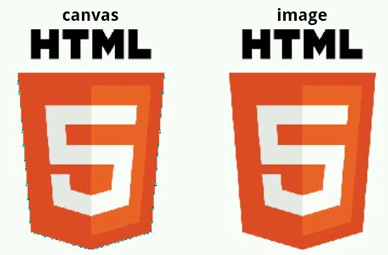
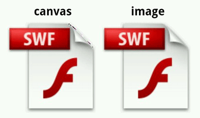
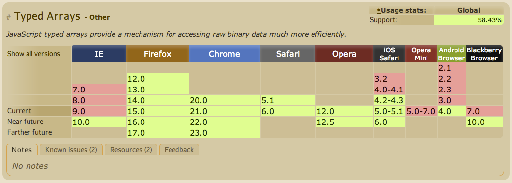

JavaScript による
Lossless 画像の扱い方
準備
WebブラウザでSWF内の画像を表示したい
SWF内の画像形式は以下の通り
- DefineBitsJpeg
- DefineBitsJpeg2
- DefineBitsJpeg3
- DefineBitsJpeg4
- DefineBitsLossless
- DefineBitsLossless2
JPEG 系はほとんど JPEG あるいは既存のファイルフォーマットの埋め込みなので若干手を加えるだけ
Lossless をどうやって表示させるか
Lossless 基礎知識
- ピクセル単位の色情報の集合
- ZLIB(RFC1950)形式で圧縮
- アルファチャンネル対応(DefineBitsLossless2)
- カラーマップ（パレット）対応
画像フォーマットの情報的にはパレット含めて PNG と相互変換可能
PNG への変換
PNG への変換
大きく分けると以下の3つの段階に分けられる
- ZLIBの展開で Lossless 生データを取り出す
- どのピクセルにどの色が割り当てられているか調べる
- PNGの生成
PNGへの変換特有の処理は生成部分だけ
生データの取り出し
ZLIBの展開が出来れば何でも良いが zlib.js というライブラリで例を示す
// deflated: ZLIB 圧縮された ByteArray or Uint8Array
var inflator = new Zlib.Inflate(deflated);
// 展開
var plain = inflator.decompress();
実際にはもう少しきちんと使う事で性能が向上する(後述)
ピクセルごとのデータ取得
基本的な仕様については省略
SWF内のColormappedとDirect画像とPNGのColourTypeの対応は以下の通り
| SWF |
PNG |
| Colormapped |
Indexed-colour |
| Direct(PIX15, PIX24) |
TrueColour, TrueColour with alpha |
- Lossless形式をデコードする際の注意:
- Colormapped は1行あたり 4Byte 単位になるようにパディングされる
- Lossless2 のときは RGB がそれぞれ alpha との乗算になっている(premultipied alpha)
PNG の生成 - 最小構成
PNG は Signature + Chunk の集まり
- Signature: 識別子
- IHDR: 画像の解像度や形式などの指定
- PLTE: パレットの色情報。RGB24で最大256個まで(*1)
- tRNS: パレットのアルファチャンネル指定(*2)
- IDAT: 画像データ
- IEND: 終端(空チャンク)
- *1: Colormapped のときだけ
- *2: Colormapped かつ Lossless2 のときだけ
PNG の生成 - パレット変換
- lossless: RGB -> PLTE チャンクにそのまま変換可能
- lossless2: RGBA -> PLTE(RGB) と tRNS(A) に分離させる
- Red, Green, Blue は premultiplied alpha
- Red * 255 / Alpha
- Green * 255 / Alpha
- Blue * 255 / Alpha
PNG の生成 - IDAT の圧縮
無圧縮にする
- PNG の IDAT チャンクは ZLIB 圧縮
- ZLIB には無圧縮モードもある
- ZLIB の圧縮アルゴリズム(LZSS+ハフマン符号)は伸張に比べて圧縮の方が圧倒的に重い
- PNG は Scanline の先頭に Filter の指定が入る
- 無圧縮 PNG では指定してもメリットがないので 0 固定
PNG の生成 - 無圧縮 ZLIB の作り方
- Header: 無圧縮固定なので決めうちしてしまう
0x78: CINFO: 0x7, CMF: 0x80x01: FDICT, FLEVEL: 0x0, FCHECK: 0x1
- Block: 複数になることもある
- Block Header: 最後のブロック以外は
0x00, 最後だけ 0x01
- LEN: 長さ
0x0000-0xFFFF
- NLEN: LENの補数
- data: コピーするだけ
- Adler-32: 計算する
-
Adler-32 の算出ではマジックナンバー 5550 を用いたパフォーマンスチューニングが有名だが、
数値が IEEE754 で扱われる JavaScript では 5550 という数値には意味がない
JavaScript 的な話
Canvas vs PNG 生成
Webブラウザで動的に画像を描画して表示するには2種類の方法がある
- Canvas
- Canvas にはピクセル単位の操作を行うAPIがある
- ImageData の data プロパティ (CanvasPixelArray -> Uint8ClampedArray) で操作
- Lossless からピクセル単位の色情報を読み PixelArray に書き込む
- CanvasRenderingContext2D#putImageData で Canvas に描画
- Image
- BMP, PNG, GIF などのバイナリを string や Array などで作成
- 作成したデータを base64 エンコードして Data URL, Object URL を作成
- img 要素の src 属性に入れることで表示
Canvas vs PNG 生成
- Canvas の方がほとんどの場合速い
- Android Browser ではアルファチャンネルの扱いに Bug がある


Canvas, PNG 生成実行デモ
- iframe で実際に Lossless2 形式の ByteArray から Canvas 描画 or PNG 生成しています
Canvas vs PNG 生成 Direct ベンチマーク
- Direct はきちんと表示されるならば Canvas 一択
Canvas vs PNG 生成 Colormapped ベンチマーク
- Colormapped は TypedArray や Blob が使える環境では速い
- PNG 生成ではパレットを変換してしまえば画像本体は行単位のコピーで変換できるので速い
Array vs Uint8Array
- iOS5 までの safari の Typed Array は Array と同等以下
- Android では 4.0 以降で使用可能な Typed Array は圧倒的に速いので使えるなら使うべき
Typed Array を使う場合は事前に必要サイズを把握する
- 可変ではないため拡張が必要になると新しいバッファを確保しコピーする必要がある
- 例えば pdf.js の ZLIB 展開はバッファサイズを倍々で増やし毎回コピーしている
ensureBuffer: function DecodeStream_ensureBuffer(requested) {
var buffer = this.buffer;
var current = buffer ? buffer.byteLength : 0;
if (requested < current)
return buffer;
var size = 512;
while (size < requested)
size <<= 1;
var buffer2 = new Uint8Array(size);
for (var i = 0; i < current; ++i)
buffer2[i] = buffer[i];
return (this.buffer = buffer2);
},
- Lossless ZLIB 展開: Width, Height, Format から展開後のサイズが計算可能
- PNG生成: 無圧縮PNGならば事前に必要なサイズが計算可能
Arrayを使う場合は初期化のサイズは 64K まで (V8)
- Android 2.x では Typed Array が使えない
- V8では初期化時に大きく取りすぎると逆に性能が落ちる

特定の環境に特化するなら気にしないで良いこともある
Lossless 形式の ZLIB 展開
Lossless 形式の ZLIB 展開時サイズ計算
- Colormapped:
PaletteSize + BitmapSize
- PaletteSize:
(BitmapColorTableSize + 1) * (3 or 4)
- Lossless のときは 3, Lossless2 のときは 4
- BitmapSize:
Width * Height ... Width は 4 の倍数に切り上げられる
例: ((width + 3) & -4) * height
- Direct:
BitmapSize
- BitmapSize は
Width * Height * (2 or 4)
- PIX15 のときは 2, PIX24 のときは 4
zlib.js では展開に使用するバッファのサイズを指定することができる
var plain = new Zlib.Inflate(compressed, {bufferSize: size}).decompress();
PNG 生成
無圧縮 PNG のサイズ計算 - PNG 識別子、チャンク共通
- Signature:
0x89, 0x50, 0x4e, 0x47, 0x0d, 0x0a, 0x1a, 0x0a ... 8 Byte
- 各チャンク共通:
- チャンクの長さ: 4 Byte
- タイプ: 4 Byte
- データ
- CRC32: 4 Byte
無圧縮 PNG のサイズ計算 - 各チャンク個別
- IHDR:
- Width: 4 Byte
- Height: 4 Byte
- BitDepth: 1 Byte
- ColourType: 1 Byte
- Compression Method: 1 Byte
- Filter Method: 1 Byte
- Interlace Method: 1 Byte
- PLTE: Colormapped のときのみ
- tRNS: Colormapped かつ DefineBitsLossless2 のとき
- IDAT: 後述
- IEND: なし
無圧縮 PNG のサイズ計算 - IDAT
- ピクセルあたりの必要バイト数
- Indexed-colour (Colormapped): 1 ピクセルあたり 1 Byte
- TrueColour (Lossless Direct): 1 ピクセルあたり 3 Byte
- TrueColour with alpha (Lossless2 Direct): 1 ピクセルあたり 4 Byte
- Scanline の先頭に Filter Byte が必要
- 要約: (Width * ピクセルあたりバイト数 + 1) * Height
PNG生成 - Object URL 作成
BlobBuilder / Blob Constructor / DataURL どれがいい？
環境ごとに速いものから使う
- Blob + createObjectURL は速い
- DataURL は文字列への変換が必要なのでどうしてもコストが大きい
- DataURL の生成では window.btoa が使える環境では使った方が速い
var BlobConstructorEnabled = false;
try { new Blob(); BlobConstructorEnabled = true; } catch(e) {}
if (BlobConstructorEnabled) {
// Blob Constructor
} else if (window.BlobBuilder || window.WebKitBlobBuilder) {
// BlobBuilder
} else {
// Data URL
}
ByteArray から ByteString への変換
single
for (i = 0, il = testData.length; i < il; ++i) {
tmp[i] = String.fromCharCode(testData[i]);
}
multi
for (i = 0, il = testData.length; i < il; i += size) {
tmp[i] = String.fromCharCode.apply(null, testData.slice(i, i + size));
}
- Array を使うのが Android 2.x 系だけならば、V8用のチューニングだけでもOK
- apply の第二引数で渡す配列が大きすぎると RangeError を出す実装もあるので注意
ByteArray から ByteString への変換
- JavaScript の処理系ごとに最適なコードが異なる
おわり
Adler-32
- 環境ごとに微妙に優劣があるので、ターゲットごとにこまめにベンチマークを取るのがお勧め
おまけ - 参考になりそうなページなど